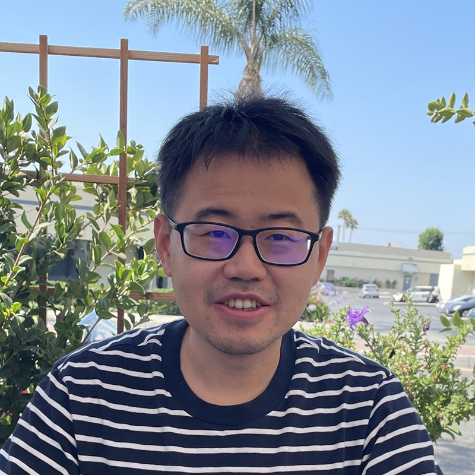
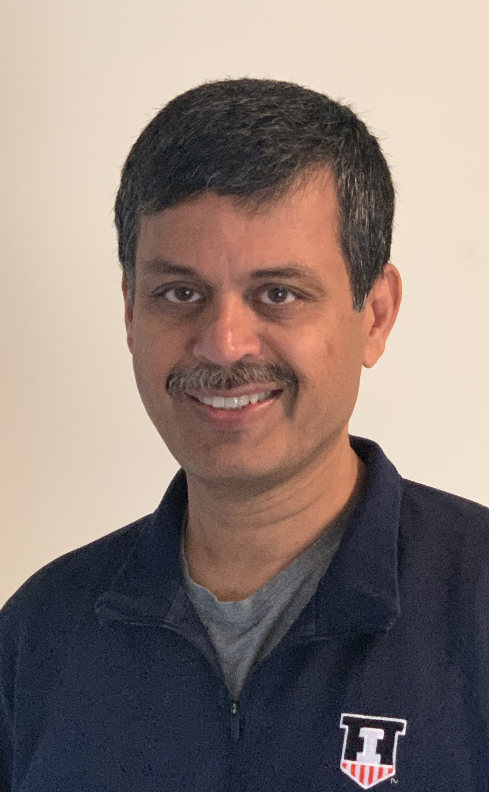
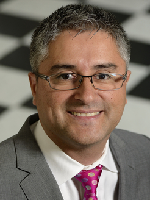

ACM SIGMETRICS 2026 Workshop
Organized by Yuxin Chen (UPenn), Laixi Shi (JHU), Yingying Li (UIUC)
This one-day workshop will feature recent advances in generative AI, broadly covering foundational and algorithmic aspects as well as applications. The workshop aims to combine theory and practice, bringing together researchers across academia and industry. The event will be organized to promote meaningful interactions and discussions, and foster interdisciplinary collaboration, through a series of invited talks and networking breaks.
If there are any questions, please contact laixis@jhu.edu.

Harvard University
Title: Theory for Discrete Diffusions: Parallel Decoding and Variable-Length Generation
Abstract: Compared to autoregressive models and even to continuous diffusions, diffusion language models offer a fundamentally different design space for crafting efficient and flexible generation processes. This talk discusses work along two axes of this design space: parallel decoding and variable-length generation. In the first half, an exact characterization of the optimal inference schedule for masked diffusion models is given, which depends on a certain "information profile" specific to the data distribution. From this characterization, simple schedules are derived that enable sampling provably more efficiently than autoregressive models for any distribution with bounded correlations. In the second half, FlexMDM is presented, a theoretically principled and empirically lightweight method for equipping diffusion language models with the ability to generate sequences of arbitrary length, while provably preserving their any-order generation capabilities.
Biography: Sitan Chen is an Assistant Professor of Computer Science at Harvard University, where he is a member of the Theory of Computation, the ML Foundations group, and the Harvard Quantum Initiative. Previously, he was an NSF math postdoc at UC Berkeley, after completing his PhD in EECS at MIT in 2021. He is broadly interested in algorithmic questions about learning from data, most recently related to the science and theory of localization-based generative modeling, and the design of quantum protocols for learning about the physical universe. His work has been recognized with an NSF CAREER award, an ICML Outstanding Paper Award, and the Harvard Dean's Competitive Fund for Promising Scholarship.
The Ohio State University
Title: Breaking the Sampling Barrier in Discrete Diffusion: Sharp Theory and Accelerated Sampling
Abstract: Diffusion models have become a central paradigm in modern generative AI, and in discrete domains such as natural language, code, and molecular design, discrete diffusion models have emerged as especially compelling due to their strong empirical performance and their natural fit to discrete data. Despite this rapid empirical progress, the theoretical understanding of their convergence behavior and sampling error remains limited. Characterizing how quickly discrete diffusion samplers approach realistic data distributions is not only a fundamental question, but also a practical one, as it directly guides the design of faster samplers that reduce inference-time computation and power consumption, both of which are critical to the real-world deployability of generative AI systems.
In this talk, I will present our recent analytical framework for establishing non-asymptotic error bounds and convergence guarantees for discrete diffusion models. Our results sharpen the current state of the art, as evidenced by matching lower bounds that characterize the fundamental error scaling. Building on these insights, I will introduce our recently developed Gibbs-based accelerated sampler, which, for the first time, breaks the polynomial sampling-complexity barrier in target accuracy and achieves a poly-logarithmic rate for uniform-rate discrete diffusion, thereby substantially reducing sampling cost. I will conclude with open directions at the intersection of foundational theory and practical sampler design, including fine-tuning and test-time design of discrete diffusion models toward downstream objectives and constraints.
Biography: Dr. Yingbin Liang is currently a Professor at the Department of Electrical and Computer Engineering at the Ohio State University (OSU), and a core faculty of the Ohio State Translational Data Analytics Institute (TDAI). She also serves as the Deputy Director of the NSF AI-EDGE Institute and the Co-Lead for Foundational AI Pillar of OSU AI^X Hub. Dr. Liang received the Ph.D. degree in Electrical Engineering from the University of Illinois at Urbana-Champaign in 2005, and served on the faculty of University of Hawaii and Syracuse University before she joined OSU. Dr. Liang's research lies at the intersection of machine learning, large-scale optimization, statistical signal processing, information theory, and wireless networks, with their growing applications to other scientific domains. She received the National Science Foundation CAREER Award and the State of Hawaii Governor Innovation Award in 2009. She also received EURASIP Best Paper Award in 2014. She is currently an Information Theory Society Distinguished Lecturer for 2026–2027. Dr. Liang is an IEEE fellow.

University of Michigan
Title: The Effect of Training Task Diversity on In-Context Learning through the Lens of Low-Dimensional Subspaces
Abstract: The transformer's emergent ability to perform in-context learning (ICL) has sparked a wide range of studies designed to understand its underlying mechanism. Existing works often study how training task diversity, defined either as the number of ICL training task vectors or as the number of function classes from which the task vectors are drawn, shapes both the learning dynamics and generalization capabilities of ICL. While both definitions have uncovered many interesting phenomena, many observations under the latter definition remain theoretically unexplained. This paper presents a minimal analytical model under which these phenomena provably emerge from the properties of the pre-training data. By modeling the pre-training task vectors as a mixture of low-rank Gaussians, we show how pre-training task diversity, defined by the number of non-overlapping columns between subspaces that parameterize the covariance matrices, improves both the generalization and optimization trajectory of ICL with linear attention. In particular, we show that our model can explain (i) why pre-training with multiple tasks can shorten the ICL training plateau (Kim et al., 2025) and (ii) why ICL appears to achieve out-of-distribution generalization. We conclude by showing how our results empirically extend to nonlinear transformers and nonlinear function classes. Overall, our work presents a mathematically tractable framework to unify existing observations.
Biography: Qing Qu is an Assistant Professor in EECS at the University of Michigan. He works at the intersection of the foundations of machine learning, numerical optimization, and signal/image processing, with a current focus on the theory of deep generative models and representation learning. Prior to joining Michigan in 2021, he was a Moore-Sloan Data Science Fellow at the Center for Data Science, New York University (2018-2020). He received his Ph.D. in Electrical Engineering from Columbia University in October 2018 and his B.Eng. in Electrical and Computer Engineering from Tsinghua University in July 2011. His work has been recognized with multiple honors, including the Best Student Paper Award at SPARS 2015, a Microsoft PhD Fellowship in Machine Learning (2016), the Best Paper Award at the NeurIPS Diffusion Models Workshop (2023), NSF CAREER Award (2022), Amazon Research Award (AWS AI, 2023), UM CHS Junior Faculty Award (2025), Google Research Scholar Award (2025), and the 1938E Award in Michigan Engineering (2026). He has led and delivered multiple tutorials at ICASSP, CPAL, CVPR, ICCV, and ICML. He was one of the founding organizers and Program Chair for the new Conference on Parsimony & Learning (CPAL), regularly serves as an Area Chair for NeurIPS, ICML, and ICLR, senior area chair for ICASSP'26, and is an Action Editor for TMLR.

University of Illinois Urbana-Champaign
Title: TBA
Abstract: TBA
Biography: TBA

University of Maryland
Title: TBA
Abstract: TBA
Biography: TBA
Tentative schedule — shared coffee and lunch breaks follow the general workshop plan.
Sitan Chen
Theory for Discrete Diffusions: Parallel Decoding and Variable-Length Generation
Speaker TBA
Idea Hub
Speaker TBA
Speaker TBA
Rogel Ballroom
Speaker TBA
Speaker TBA
Idea Hub
Speaker TBA
Speaker TBA
Johns Hopkins University (ECE & DSAI)
University of Illinois Urbana-Champaign (ISE)